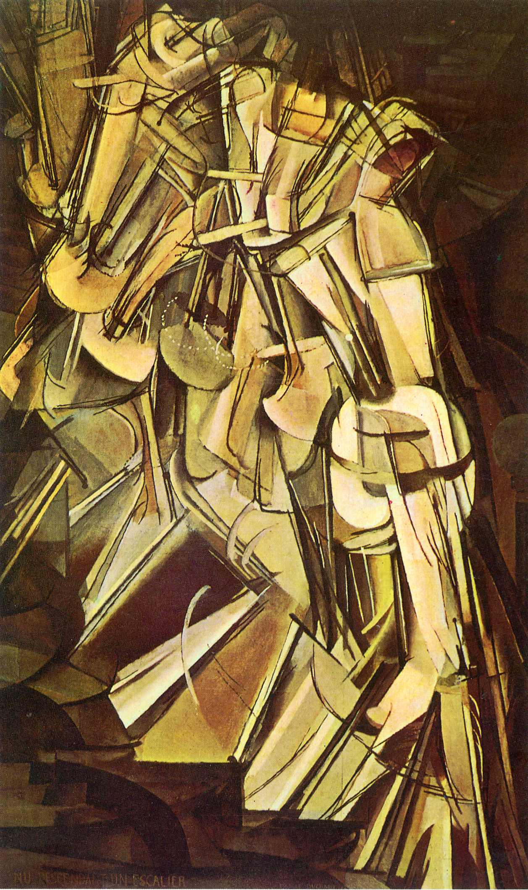

Resources
Archives, Journals, and Websites

19th Century Literature

- 19th-Century Masterfile
- American Antiquarian Society (AAS) Historical Periodicals Collection
- America: History and Life
- American Literary Scholarship
- American Historical Periodicals
- American Literature
- American Literary History
- American Memory Project (Library of Congress)
- American Periodical Series 1740-1900
- American Transcendental Quarterly: 19th century American literature and culture
- Accessible Archives
- Archive of Americana
- Arizona Quarterly: A Journal of American Literature, Culture, and Theory
- British Periodicals
- C19
- ELH
- Godey’s Lady’s Book
- Harpweek 1857-1875
- Illustrated Civil War Newspapers and Magazines
- J19
- Journal of the History of Ideas
- Leviathan: A Journal of Melville Studies
- Literary Review
- Literature Compass
- Making of America (Cornell University)
- Mark Twain Journal
- MELUS
- Mott’s A History of American Magazines, 1741-1930, vols. 1-5
- The Nathaniel Hawthorne Review
- New Literary History
- Nineteenth-Century Literature
- Periodicals Index Online
- Republics of Letters: A Journal for the Study of Knowledge, Politics, and the Arts South Atlantic Quarterly
- Research Society for American Periodicals (RSAP)
- Slavery Narratives: A Folk History of Slavery in the United State from Interviews with Former Slaves
- The Cambridge History of American Poetry
- The Emily Dickinson Journal
- Walt Whitman Quarterly Review
- Walt Whitman Archive
20th Century Literature
- Twentieth-Century American Poetry
- African American Review
- American Poetry
- Comparative Literature
- Contemporary Literature
- The Cormac McCarthy Journal
- Edith Wharton Review
- English Language and Linguistics
- Emily Dickinson Journal
- Hemingway Review
- Henry James Review
- Journal of Aesthetics and Culture
- Journal of American Culture
- Journal of American Drama and Theatre
- Journal of American Folklore: journal of the American Folklore Society
- Journal of American Studies
- Journal of Caribbean Literatures
- Journal of Linguistics
- Journal of Modern Literature
- Journal of Popular Culture
- Langston Hughes Review
- Literature and History
- Literature and Medicine
- Literature Online
- Literature/Film Quarterly
- Modern Fiction Studies
- Modernism/Modernity
- Philip Roth Studies
- Studies in American Fiction
- Wallace Stevens Journal
- Woolf Studies Annual
Theory and Philosophy

- American Imago
- Cambridge Companions Online
- Diacritics
- Debates in the Digital Humanities
- Digital Companion to C. S. Peirce
- Digital Humanities Quarterly
- Digital Scholarship in the Humanities
- Essays in Criticism
- Extrapolation
- Film Quarterly
- History and Theory
- History of Photography
- Internet Encyclopedia of Philosophy
- Intertexts
- Introductory Guide to Critical Theory
- Journal of Narrative Theory
- Journal of the History of Ideas
- New Left Review
- Oxford Companion to Philosophy
- Oxford Dictionary of Philosophy
- Philosophy and Literature
- Pocket Essentials Series: Literary Theory
- Reader: essays in reader-oriented theory, criticism, and pedagogy
- Screen
- Signo: Theoretical Semiotics on the Web
- Signs
- Stanford Encyclopedia of Philosophy
- The Johns Hopkins Guide to Literary Theory & Criticism
- The Princeton Encyclopedia of Poetry & Poetics
- Grammar Terms
- Grammatical Terms
- Online Etymology Dictionary
- Oxford English Dictionary (OED)